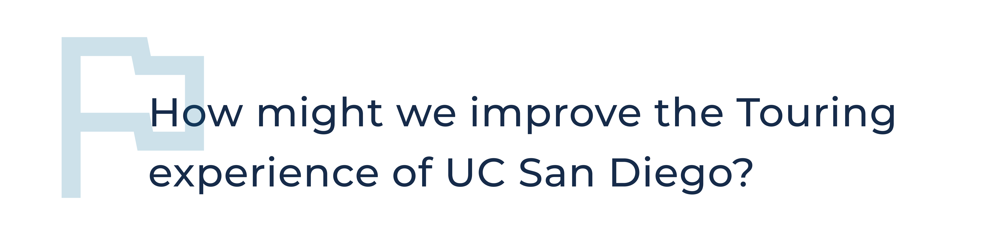
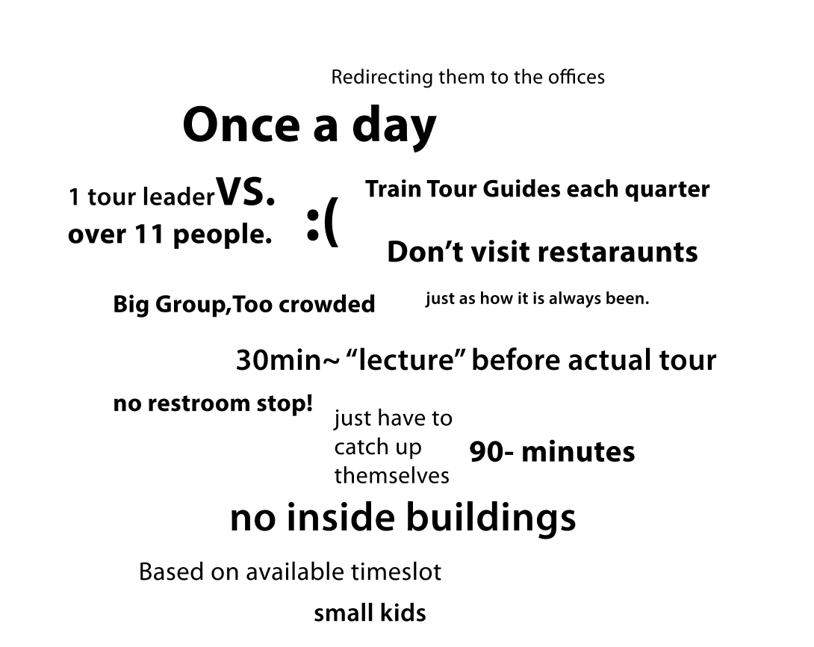
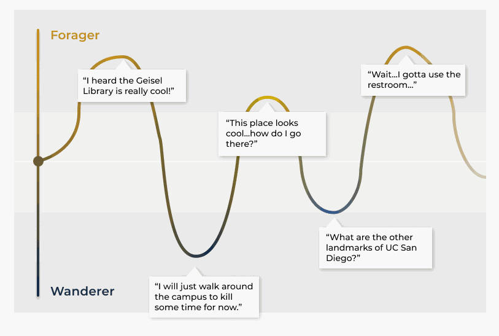
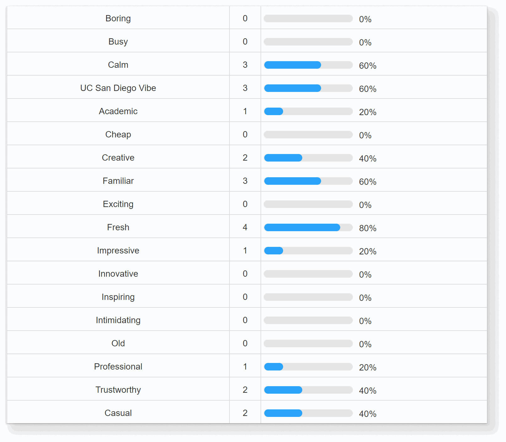
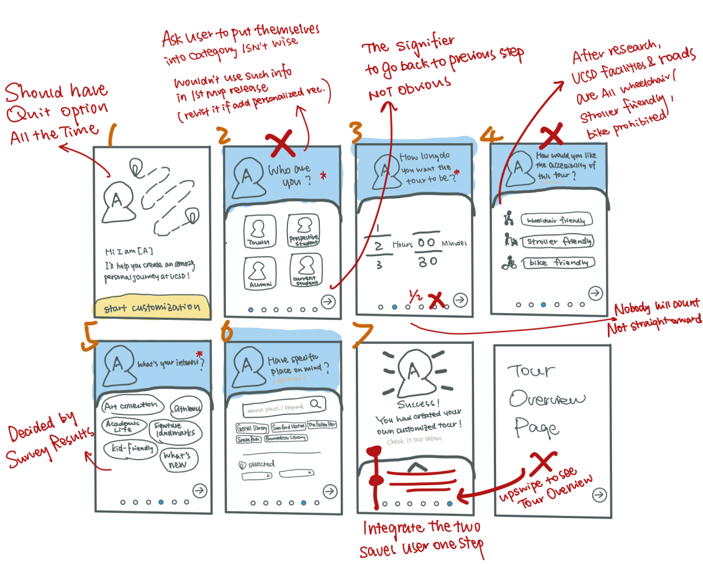
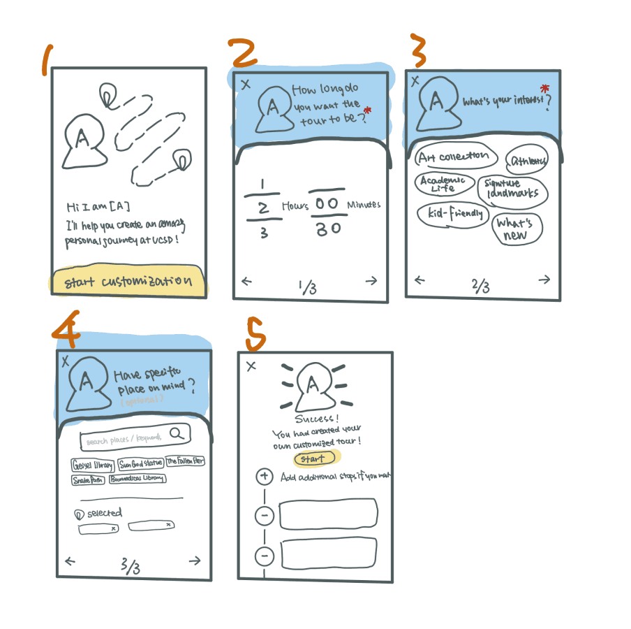
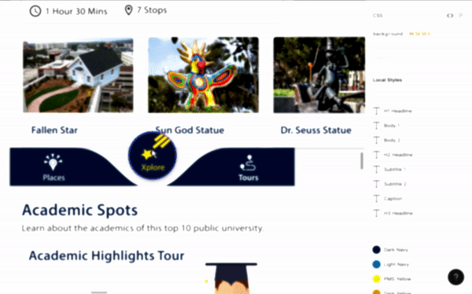
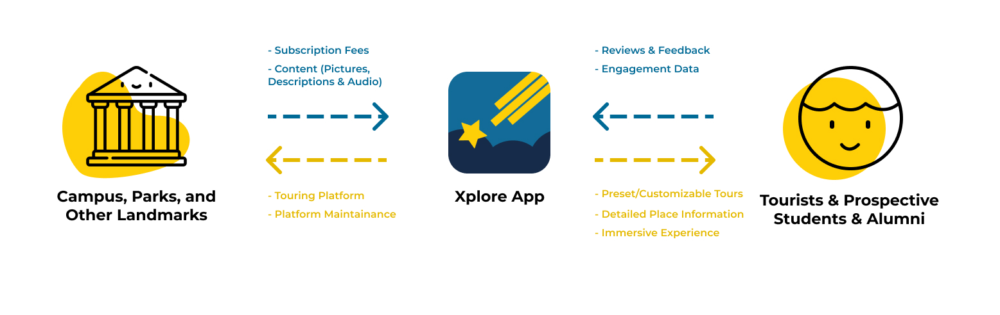
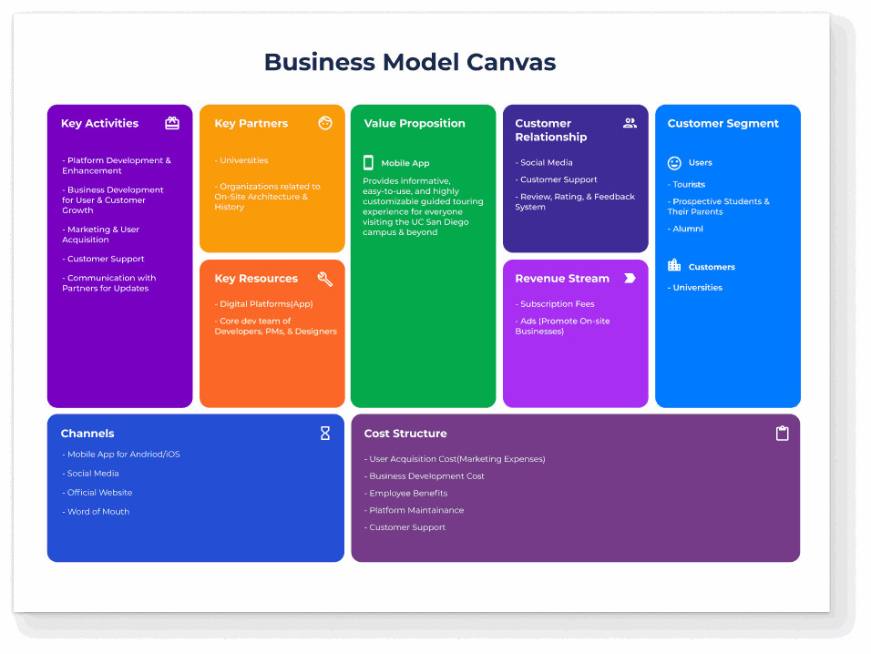

A mobile app for anyone interested in touring UC San Diego. Users can explore the campus through going on preset tours of different topics and customizing their own tour based on their interests. Each place on campus has a detail page that contains all relevant information about this place.
Xplore UCSD
Product Design
Project Overview
- Exploratory Research
- UX&UI Design
- Usability Testing
- 10 Weeks
- Winter 2020
- Shaotao Yi (PM)
- Yvonne Hou (Designer) &
- 8 talented software developers
My Involvements
Timeframe
My Team
Background

For this project, we were challenged by the San Diego Architecture Foundation(SDAF) to improve the current touring experience of UC San Diego. SDAF is one of the main contributors of the amazing architecture on campus, and one of their goals is to better showcase their works through an improved touring experience.
Final Design
Onboarding
Onboarding Pages are important first-impressions users have towards an app. Here, we used the onboarding pages to get users familiar and confident with our app’s key features in a visually-appealing manner.
Main Pages
The three main pages for our app are the "Places" Page, the "Tours" Page, and the "Xplore" Home Page. "Places" page contains all places on campus and a search bar. The "Tours" Page consists the customization feature plus many preset tours under different topics. The "Xplore" Page shows the places near your current location and modulized combinations of places and tours.
Tour Customization
Besides preset tours, users can also customize their tour of interests. The simple customization process makes it the key of a personalized touring experience that our app can provide.
Tour through Stops
When users hop on tours, they will see a preview of their next stop. When they are on their way to the next stop, they can read through the place detail page and familiarize themselves with the place. After they arrive, they can listen to the audio guide while freeing their eyes focused on the scenes in front of them. :)
Breaking Down the Challenge
To improve, we must first understand the problems within the current experience. So, we conducted field studies and went on our school’s official campus tour, the Triton Tour. After recording the interactions that happened during tours, we made a word-cloud of the things that occurred frequently.
Aside from field studies, we interviewed the current Triton Tour leaders to understand the reasons behind the Triton Tour’s design. Using the connections of SDAF, we sent out a survey to prospective students and tourists at San Diego to gather their opinions of a good touring experience.
Based on the data collected from these three methods, we concluded four problems within the current touring system:
Competitor Analysis
After discovering problems from the Triton Tour, we evaluated other existing solutions. This allowed us to discover potential gaps in the current market that our app could potentially fill.
We evaluated the existing products people might use during tour on five factors:
- Customizability
- Informativeness
- Interactiveness
- Ease-of-Use
- Accessibility
From the graph, we see that our main competitor - the Triton Tour - does a great job at being interactive(in-person experience), being easy-to-use(entirely guided by the tour leader), and being accessible(anyone who is not deaf or blind can have the same experience).
However, the Triton Tour is not really good at covering all the necessary information in one hour, and, across all the other current solutions, none of them really succeeds in satisfying this factor. This finding gave us a signal of where our app could stand in the current market.
Design Criterion
Based on our discovery of problems and competitive analysis, we came up with three main criterion for our app:

Target User
Before delving into designs, we needed to understand who we are really designing for. So, we broke down the concept of “tourists” of UC San Diego into three types of identity and listed the pain points of each.

Another thing we found was that, when people are on a tour, their mindset generally falls somewhere on the following spectrum:
Forager
- Has a specific place in mind
- In this state, people have strong interests towards a specific place.
Wanderer
- No clear destination in mind
- In this state, people are more likely to take suggestions.
Instead of a fixed point, a natural, fruitful exploring experience stems from a dialectical relationship between the foraging state and the wanderer state. During a tour, the user’s mindset is constantly moving on the spectrum.
As we understood such dynamics, we decided to design our app not only to support this dynamic, but also to promote the constant interchanging between the two sides of the spectrum.
Information Architecture
To make the app informative, one of the key things is a clear information architecture. For this app, we saw the endpoint of a touring experience to be entering Place Detail Page - as reaching a stop of a tour. So, we started to brainstorm potential use cases and points of entry for the Place Detail Page.
Design Iterations
On the place detail page, a lot of information is crammed onto a single, scrollable interface. We neede to lay out the information in the best way so that users absorb the information without being overwhelmed.
Therefore, we came up with three versions of the interfaces, and conducted a preference test with five users to gather their preferences on these variations.
It is also important for us to consider how the detail page will be previewed during a tour. So we conducted another test on the layouts of information during the tour.
UI Desirability Test
We used the official color palette of UC San Diego for this app. Since this is a touring app, we wanted to make the UI as welcoming and up-beat as possible. So, we presented our design screens to five users and asked them to use choose from 18 adjectives to describe the UI. The adjectives used were a spin from the Microsoft Desirability Toolkit.
From the survey responses, we were getting positive feedback from our users, and we wanted to continue in this direction in our design.
Tour Customization
One of the responses we got from our initial survey was - most of the tourists wanted to tour with someone from the school, because they felt like it would be more interactive. Being a mobile app, it is inherently hard for us to compete with in-person tours for interactivity, but we used this data as an inspiration for our Tour Customization feature.
We decided to use an Tour Leader avatar that guides users through the entire process. By using the avatar, we hoped to make the customization process more interesting and introduce another sense of friendliness to our app.
After our initial sketch, we felt like the process was too long, so we prioritized the essential asks and reduced the process to only three steps.
Accessibility Tests
Since our app is a touring app, we should expect our users to use it outdoor. But being in Southern California, sometimes the sunlight can be really strong, so, I wanted to test our prototypes under the sun. Thanks to my talented fellow designer Yvonne Hou, we found a tool that can simulate extreme conditions onto the interfaces, and we tested our prototype under extreme sunlight.
Extreme Sunlight Simulation
One significant change we made from this test was changing the color of some buttons. The contrast between yellow with white here can be really blurred out in extreme sunlight conditions. The later color pairing both has good contrast and is still recognizable under the sun.
Business Model
For this project, we designed our app as a touring app for UC San Diego. But, is there a way for us to scale this project as a business? After discussing with our PM, Shaotao, we came up with potential ways to scale this app as a business.
Our business model is a subscription-service for campuses, parks, and other landmarks. They will provide us with subscription fees and content, while we provide them a platform for their tourists.
Design System
Takeaways
Our business model is a subscription-service for campuses, parks, and other landmarks. They will provide us with subscription fees and content, while we charge subscription fees and provide them a platform for their tourists.